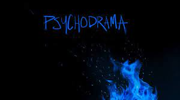
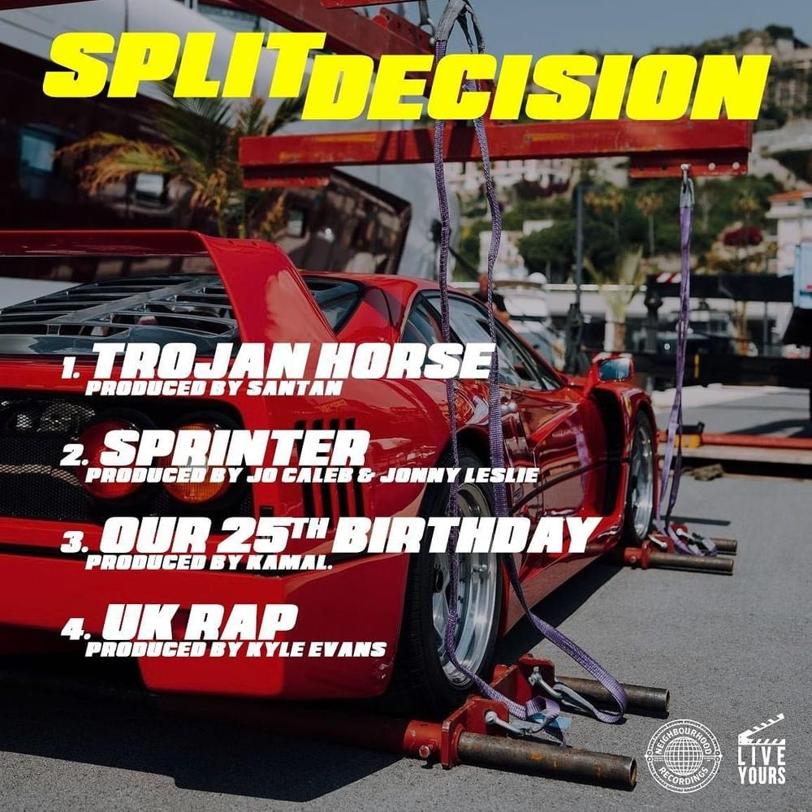

We're All Alone in This Together is the second studio album by British rapper Dave, released on 23 July 2021 by Neighbourhood Recordings. The album succeeds his debut album Psychodrama, and includes guest appearances from Stormzy, James Blake, Wizkid, Snoh Aalegra, Boj, Fredo, Ghetts, Giggs and Meekz
Psychodrama is the debut studio album by British rapper Dave, released on 8 March 2019. It follows his first two EPs, Six Paths and Game Over. The album features guest appearances from J Hus, Burna Boy and Ruelle. Psychodrama was executive produced by both Dave and Fraser T. Smith
Split Decision is a collaborative EP, and fifth overall, by British rappers Dave and Central Cee. It was released on 5 June 2023 by Neighbourhood and Live Yours. It was preceded by its lead single "Sprinter", which was released four days prior.
